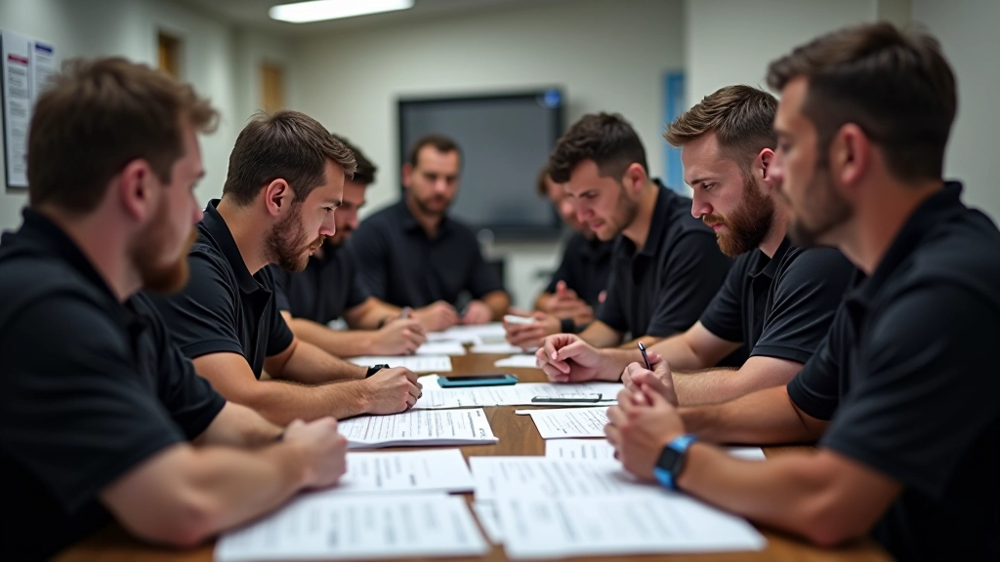

هيئة التحرير
هيئة التحرير
هيئة تحرير فريق النخبة للتحمل
مجموعة صغيرة تجمع بين قادة استراتيجية ومنسقي بيتس ومحللي بيانات، عملوا معاً في سباقات تتابع محلية منذ 2020. كل ما تقرأه على هذا الموقع يمر عبر هذه المجموعة قبل النشر.
من أين تأتي معرفتنا
لم نبدأ من الكتب، بل من أخطاء ارتكبناها في منطقة البيتس: توقّف استغرق ضعف الزمن المخطط له لأن الأدوات لم تكن مرتبة، وسائق دخل نوبته دون أن يعرف موقع الفريق في الترتيب، وجولة كاملة ضاعت لأننا لم نسجّل أزمنة اللفات.
هذه التجارب هي مصدر معظم ما نكتبه. عندما نقول إن قائمة الفحص لا تُختصر، فذلك لأننا اختصرناها مرة ودفعنا ثمن ذلك في نتيجة السباق.

كيف نُعِدّ كل دليل
أربع مراحل يمر بها كل نص قبل أن ينشر على الموقع.
جمع الملاحظات الميدانية
نبدأ من دفاتر السباق: أزمنة التوقفات، ملاحظات السائقين، وما تغيّر بين جولة وأخرى.
مقارنة مع ممارسات الفرق الأخرى
نتحدث مع فرق أخرى في الحلبات المحلية لنعرف هل ما وصلنا إليه قاعدة عامة أم استثناء يخص ظروفنا.
الكتابة بلغة قابلة للتنفيذ
كل توصية تُكتب بصيغة يمكن تطبيقها في اليوم التالي، مع ذكر الشرط الذي تصلح فيه.
مراجعة موسمية
نعيد قراءة كل دليل بعد نهاية الموسم ونحدّث ما لم يعد دقيقاً.
مبادئ نلتزم بها
نقول "لا نعرف"
حين تكون التجربة غير كافية لبناء توصية، نذكر ذلك صراحة بدل تعبئة الفراغ بكلام عام.
السلامة ليست قابلة للتفاوض
لا ننشر أي اختصار يوفّر وقتاً على حساب فحص أمان، مهما كانت المكاسب الزمنية.
السياق قبل القاعدة
نذكر دائماً حجم الفريق ومدة السباق ونوع الحلبة التي تنطبق عليها التوصية.
تصحيح علني
عندما نكتشف خطأ في نص منشور نصححه ونوضح ما تغيّر، بدلاً من حذفه بصمت.
لديك ملاحظة على أحد الأدلة؟
إن وجدت معلومة غير دقيقة أو تجربة تناقض ما كتبناه، نريد أن نسمعها. التصحيحات من الفرق الأخرى حسّنت أكثر من دليل عندنا.
راسل هيئة التحريرإشعار
المحتوى المنشور هنا تعليمي وإعلامي فقط، ولا يغني عن تعليمات الحلبة أو الجهة المنظمة للسباق. تحقق دائماً من اللوائح السارية في مكان السباق قبل تطبيق أي إجراء.